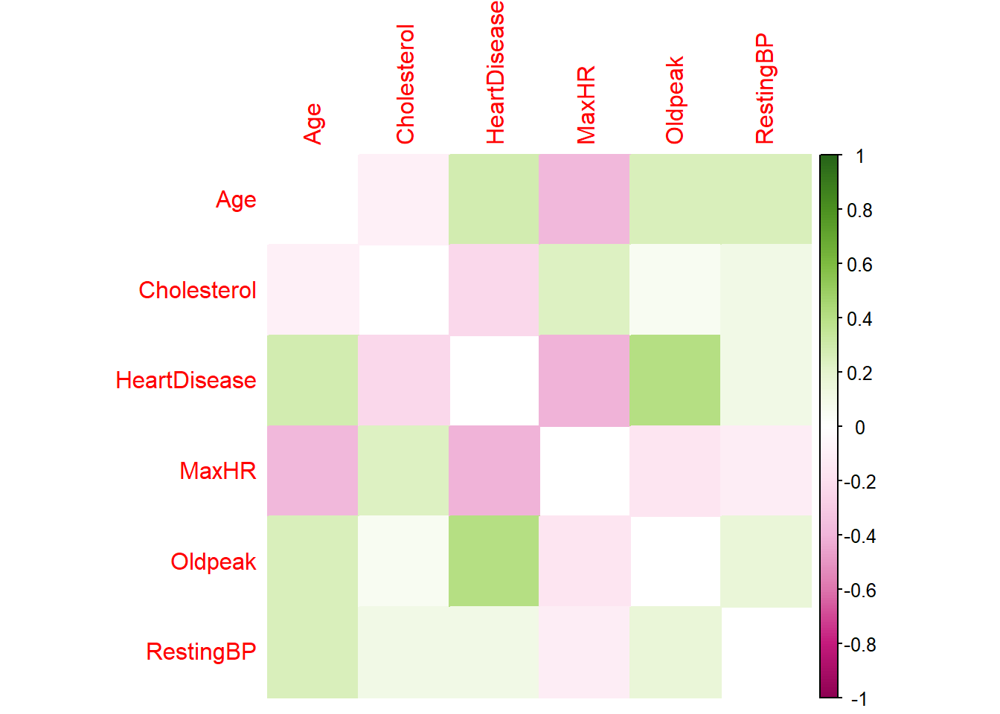
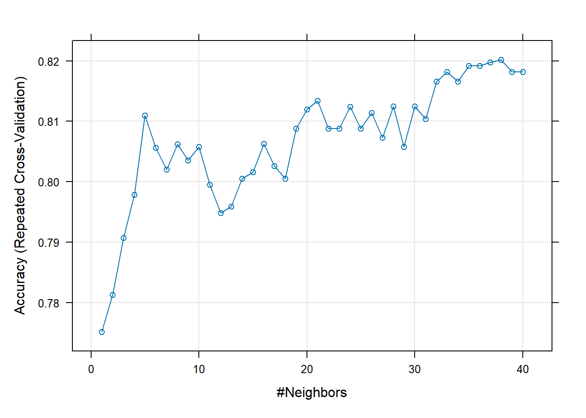

library(readr)
library(caret)
library(tidyverse)
library(corrplot)
library(randomForest)HW5-Fitting Models
Jie Chen 07/14/2024
The purpose of this homework is to get practice fitting models using the caret package.
Task 1: Conceptual Questions
What is the purpose of using cross-validation when fitting a random forest model?
Cross-validation is essential when fitting a random forest model because it provides a robust way to evaluate the model’s performance, prevents overfitting, helps in hyperparameter tuning, and ensures the model’s reliability and generalizability.
Describe the bagged tree algorithm.
Generate new training samples (bootstrap sampling) with replacement. Training individual tree and aggregate pridictions. It reduces overfitting, improves accuracy, and provides robustness against noise and outliers, making it a powerful ensemble technique in machine learning.
What is meant by a general linear model?
A General Linear Model (GLM) is a framework that extends linear regression to model response variables with different types of distributions by using a link function to relate the mean of the response variable to the linear predictor. GLMs are versatile and can be used for various types of data, making them a powerful tool in statistical modeling and analysis.
When fitting a multiple linear regression model, what does adding an interacion term do? That is , what does it allow the model to do differently as compared to when it is not included in the model?
When fitting a multiple linear regression model, adding an interaction term allows the model to account for the combined effect of two (or more) predictor variables on the response variable. This can be particularly useful when the effect of one predictor variable on the response variable depends on the value of another predictor variable.
Why do we split our data into a training and test set?
Splitting data into a training set and a test set is essential for assessing the model’s ability to generalize to new data, Preventing overfitting, providing an unbiased evaluation of model performance, avoiding data leakage, ensuring that the model’s performance is evaluated accurately and fairly.
Task 2: Fitting Models
Here we use the dataset called heart.csv. The data set gives information about whether or not someone has heart disease (HeartDisease =1 or =0) along with different measurements about that person’s health.
Quick EDA / Data Preparation
Loading required packages
Read in the data first.
heart_data <- read_csv("https://www4.stat.ncsu.edu/online/datasets/heart.csv")Rows: 918 Columns: 12
── Column specification ────────────────────────────────────────────────────────
Delimiter: ","
chr (5): Sex, ChestPainType, RestingECG, ExerciseAngina, ST_Slope
dbl (7): Age, RestingBP, Cholesterol, FastingBS, MaxHR, Oldpeak, HeartDisease
ℹ Use `spec()` to retrieve the full column specification for this data.
ℹ Specify the column types or set `show_col_types = FALSE` to quiet this message.After checking the data, I want to convert the character variables to factors. And also there is a numeric variable FastingBS (0/1) also need to be converted to factor. And then check on the missingness and summarize the data with respect to the relationships of the variables to HeartDisease.
# convert character variables to factors
heart_data <- heart_data |>
mutate(across(where(is.character), as.factor))
heart_data$FastingBS <- as.factor(heart_data$FastingBS)
# check missing values
sum(is.na(heart_data))[1] 0Data set doesn’t contain any missing values. Then we do some summaries for both numerical and categorical variables.
# summary the whole data frame
summary(heart_data) Age Sex ChestPainType RestingBP Cholesterol
Min. :28.00 F:193 ASY:496 Min. : 0.0 Min. : 0.0
1st Qu.:47.00 M:725 ATA:173 1st Qu.:120.0 1st Qu.:173.2
Median :54.00 NAP:203 Median :130.0 Median :223.0
Mean :53.51 TA : 46 Mean :132.4 Mean :198.8
3rd Qu.:60.00 3rd Qu.:140.0 3rd Qu.:267.0
Max. :77.00 Max. :200.0 Max. :603.0
FastingBS RestingECG MaxHR ExerciseAngina Oldpeak
0:704 LVH :188 Min. : 60.0 N:547 Min. :-2.6000
1:214 Normal:552 1st Qu.:120.0 Y:371 1st Qu.: 0.0000
ST :178 Median :138.0 Median : 0.6000
Mean :136.8 Mean : 0.8874
3rd Qu.:156.0 3rd Qu.: 1.5000
Max. :202.0 Max. : 6.2000
ST_Slope HeartDisease
Down: 63 Min. :0.0000
Flat:460 1st Qu.:0.0000
Up :395 Median :1.0000
Mean :0.5534
3rd Qu.:1.0000
Max. :1.0000 Calculate and plot correlation between all numerical features.
m= cor(select(heart_data,c(HeartDisease,Age,RestingBP,Cholesterol, MaxHR,Oldpeak)))
corrplot(m, method='color',
order='alphabet',
diag=FALSE,
col=COL2('PiYG')
)
It seems person with heart disease has some linear correlation with age, resting blood pressure, serum cholesterol, maximum heart rate and oldpeak.
Now, check on categorical variables vs. HeartDisease
# Function to summarize a categorical variable by HeartDisease
category_summary <- function(var){
heart_data |>
count(HeartDisease, {{var}}) |>
group_by(HeartDisease) |>
mutate(percentage = n / sum(n) * 100)
}
# gender vs. heartdisease
gender_summary <- category_summary(Sex)
print(gender_summary)# A tibble: 4 × 4
# Groups: HeartDisease [2]
HeartDisease Sex n percentage
<dbl> <fct> <int> <dbl>
1 0 F 143 34.9
2 0 M 267 65.1
3 1 F 50 9.84
4 1 M 458 90.2 # chestpain type vs. HeartDisease
chestpain_summary <-category_summary(ChestPainType)
print(chestpain_summary)# A tibble: 8 × 4
# Groups: HeartDisease [2]
HeartDisease ChestPainType n percentage
<dbl> <fct> <int> <dbl>
1 0 ASY 104 25.4
2 0 ATA 149 36.3
3 0 NAP 131 32.0
4 0 TA 26 6.34
5 1 ASY 392 77.2
6 1 ATA 24 4.72
7 1 NAP 72 14.2
8 1 TA 20 3.94# fastingBS vs HeartDisease
fastingBS_summary <- category_summary(FastingBS)
print(fastingBS_summary)# A tibble: 4 × 4
# Groups: HeartDisease [2]
HeartDisease FastingBS n percentage
<dbl> <fct> <int> <dbl>
1 0 0 366 89.3
2 0 1 44 10.7
3 1 0 338 66.5
4 1 1 170 33.5# restingECG vs. HeartDisease
resting_summary <- category_summary(RestingECG)
print(resting_summary)# A tibble: 6 × 4
# Groups: HeartDisease [2]
HeartDisease RestingECG n percentage
<dbl> <fct> <int> <dbl>
1 0 LVH 82 20
2 0 Normal 267 65.1
3 0 ST 61 14.9
4 1 LVH 106 20.9
5 1 Normal 285 56.1
6 1 ST 117 23.0# exerciseangina vs heartdisease
exerciseAngina_summary <-category_summary(ExerciseAngina)
print(exerciseAngina_summary)# A tibble: 4 × 4
# Groups: HeartDisease [2]
HeartDisease ExerciseAngina n percentage
<dbl> <fct> <int> <dbl>
1 0 N 355 86.6
2 0 Y 55 13.4
3 1 N 192 37.8
4 1 Y 316 62.2From the above summary, Four categorical variables may be related to Heart Disease. Male may has high percentage with heart disease compared to female. Chest pain type with ASY, RestingECG with ST may has higher rate of heart disease. Heart disease is probably also related to exercise induced angina.
Now we want to create a new variable which is a factor version of HeartDisease varible and remove the ST_slope and the original HeartDisease variable
heart_data <- heart_data |>
mutate(HD=ifelse(HeartDisease==0,"No","Yes")) |>
mutate(HD=as.factor(HD))|>
select(-HeartDisease,-ST_Slope) We will create dummy columns corresponding to the Sex, ExerciseAngina, ChestPainType and RestingECG for use in KNN model.
# Create dummy variables for categorical columns
dummies <- dummyVars(~ Sex + ChestPainType + RestingECG + ExerciseAngina, data = heart_data)
# Generate the dummy columns
dummy_data <- predict(dummies, newdata = heart_data)
# Convert the dummy data to a data frame
dummy_data <- as.data.frame(dummy_data)
# Combine the dummy columns with the original data
heart_data <- cbind(heart_data, dummy_data)Now, let’s check the data structure
str(heart_data)'data.frame': 918 obs. of 22 variables:
$ Age : num 40 49 37 48 54 39 45 54 37 48 ...
$ Sex : Factor w/ 2 levels "F","M": 2 1 2 1 2 2 1 2 2 1 ...
$ ChestPainType : Factor w/ 4 levels "ASY","ATA","NAP",..: 2 3 2 1 3 3 2 2 1 2 ...
$ RestingBP : num 140 160 130 138 150 120 130 110 140 120 ...
$ Cholesterol : num 289 180 283 214 195 339 237 208 207 284 ...
$ FastingBS : Factor w/ 2 levels "0","1": 1 1 1 1 1 1 1 1 1 1 ...
$ RestingECG : Factor w/ 3 levels "LVH","Normal",..: 2 2 3 2 2 2 2 2 2 2 ...
$ MaxHR : num 172 156 98 108 122 170 170 142 130 120 ...
$ ExerciseAngina : Factor w/ 2 levels "N","Y": 1 1 1 2 1 1 1 1 2 1 ...
$ Oldpeak : num 0 1 0 1.5 0 0 0 0 1.5 0 ...
$ HD : Factor w/ 2 levels "No","Yes": 1 2 1 2 1 1 1 1 2 1 ...
$ Sex.F : num 0 1 0 1 0 0 1 0 0 1 ...
$ Sex.M : num 1 0 1 0 1 1 0 1 1 0 ...
$ ChestPainType.ASY: num 0 0 0 1 0 0 0 0 1 0 ...
$ ChestPainType.ATA: num 1 0 1 0 0 0 1 1 0 1 ...
$ ChestPainType.NAP: num 0 1 0 0 1 1 0 0 0 0 ...
$ ChestPainType.TA : num 0 0 0 0 0 0 0 0 0 0 ...
$ RestingECG.LVH : num 0 0 0 0 0 0 0 0 0 0 ...
$ RestingECG.Normal: num 1 1 0 1 1 1 1 1 1 1 ...
$ RestingECG.ST : num 0 0 1 0 0 0 0 0 0 0 ...
$ ExerciseAngina.N : num 1 1 1 0 1 1 1 1 0 1 ...
$ ExerciseAngina.Y : num 0 0 0 1 0 0 0 0 1 0 ...Split the data
Split the heart_data into training and test set with a 70:30 ratio.
set.seed(5)
trainIndex <-createDataPartition(heart_data$HD, p=0.7, list=FALSE)
train_data <-heart_data[trainIndex,]
test_data <-heart_data[-trainIndex,]Preprocessing data
preprocessing data
pre_proc_values <- preProcess(train_data, method=c("center","scale"))
# scaling and centralizing train and test data sets
train_trans <- predict(pre_proc_values, train_data)
test_trans <- predict(pre_proc_values, test_data)Training the kNN model, 10 fold cv, repeats =3. We need to standardize our data using caret’s preProcess() method.
train.control <- trainControl(method="repeatedcv", number=10, repeats=3)
set.seed(123)
# Remove unwanted columns
train_data_knn <- train_data |>
select(-Sex, -ChestPainType, -FastingBS, -RestingECG, -ExerciseAngina)
# Create the tuning grid for k values from 1 to 40
tune_grid <- expand.grid(k = 1:40)
knn_model <- train(HD~ .,
data=train_data_knn,
method="knn",
trControl=train.control,
preProcess=c('center','scale'),
tuneGrid=tune_grid)
knn_modelk-Nearest Neighbors
643 samples
16 predictor
2 classes: 'No', 'Yes'
Pre-processing: centered (16), scaled (16)
Resampling: Cross-Validated (10 fold, repeated 3 times)
Summary of sample sizes: 578, 579, 578, 579, 579, 579, ...
Resampling results across tuning parameters:
k Accuracy Kappa
1 0.7751759 0.5479688
2 0.7813212 0.5594320
3 0.7907275 0.5777054
4 0.7979065 0.5927962
5 0.8109446 0.6198381
6 0.8056799 0.6093205
7 0.8020654 0.6019602
8 0.8062165 0.6101834
9 0.8035868 0.6048437
10 0.8057836 0.6089835
11 0.7995331 0.5963172
12 0.7948210 0.5867341
13 0.7958958 0.5891886
14 0.8005355 0.5983682
15 0.8015937 0.6003608
16 0.8062822 0.6093112
17 0.8026519 0.6023430
18 0.8005202 0.5982539
19 0.8088380 0.6142741
20 0.8119555 0.6205463
21 0.8134534 0.6238227
22 0.8088062 0.6138168
23 0.8088463 0.6142850
24 0.8124197 0.6217965
25 0.8088297 0.6141379
26 0.8114264 0.6191198
27 0.8072833 0.6107233
28 0.8124596 0.6207149
29 0.8057531 0.6070172
30 0.8124601 0.6198159
31 0.8104085 0.6162012
32 0.8166110 0.6284976
33 0.8181897 0.6311455
34 0.8166190 0.6281102
35 0.8191500 0.6331666
36 0.8191663 0.6330036
37 0.8197279 0.6340168
38 0.8202080 0.6349854
39 0.8181652 0.6307121
40 0.8181735 0.6308435
Accuracy was used to select the optimal model using the largest value.
The final value used for the model was k = 38.From the results, it automatically selects best k-value. Here, our training model is choosing k = 35 as its final value.
Let’s plot the result
plot(knn_model)
As it could be seen from the graph above, k=35 has the highest accuracy.
Now, our model is trained with K value as 35. We are ready to predict classes for our test set. We can use predict() method.
test_pred <- predict(knn_model, newdata = test_trans)
test_pred [1] No No No Yes No No No Yes Yes No No No No No Yes No No Yes
[19] Yes No No No Yes Yes No No Yes No Yes Yes No No Yes No No Yes
[37] Yes No Yes No No Yes Yes No Yes Yes No No Yes Yes Yes No Yes No
[55] No No No Yes No No Yes No No Yes Yes No Yes No No No No Yes
[73] Yes Yes Yes Yes Yes No Yes No No Yes Yes No No No No Yes No Yes
[91] Yes Yes Yes Yes Yes Yes Yes No Yes Yes No Yes Yes Yes Yes No Yes Yes
[109] No Yes No Yes Yes Yes Yes No Yes Yes Yes Yes Yes Yes Yes Yes Yes Yes
[127] No Yes Yes Yes Yes Yes Yes Yes Yes Yes Yes Yes Yes Yes Yes No Yes Yes
[145] Yes Yes Yes No Yes Yes Yes Yes Yes Yes Yes Yes No Yes Yes Yes Yes Yes
[163] Yes Yes Yes Yes No No Yes Yes Yes Yes Yes Yes Yes Yes Yes Yes No Yes
[181] Yes No No No Yes Yes Yes Yes No No Yes Yes Yes No Yes No Yes No
[199] No No No Yes No No Yes No No No Yes No No Yes No Yes Yes Yes
[217] No No Yes No Yes Yes No Yes No Yes Yes Yes Yes Yes Yes No No No
[235] No No Yes Yes Yes No Yes Yes No Yes No No No No Yes No No No
[253] Yes No No No No No Yes No Yes No No No Yes No No Yes No Yes
[271] No No Yes No No
Levels: No YesCheck how Accurately our knn model is working? Using confusionMatrix(), we can print statistics of our results. It shows that our model accuracy for test set is 76.36%.
confusionMatrix(test_pred, test_trans$HD)Confusion Matrix and Statistics
Reference
Prediction No Yes
No 88 30
Yes 35 122
Accuracy : 0.7636
95% CI : (0.7089, 0.8126)
No Information Rate : 0.5527
P-Value [Acc > NIR] : 3.04e-13
Kappa : 0.5201
Mcnemar's Test P-Value : 0.6198
Sensitivity : 0.7154
Specificity : 0.8026
Pos Pred Value : 0.7458
Neg Pred Value : 0.7771
Prevalence : 0.4473
Detection Rate : 0.3200
Detection Prevalence : 0.4291
Balanced Accuracy : 0.7590
'Positive' Class : No
Logistic Regression
preprocessing data
#remove the dummy variables from train and test dataset
train_log <- train_data |>
select(1:11)
test_log <- test_data |>
select(1:11)
pre_proc_values <- preProcess(train_log, method=c("center","scale"))
# scaling and centralizing train and test data sets
train_trans <- predict(pre_proc_values, train_log)
test_trans <- predict(pre_proc_values, test_log)# Define train control for repeated CV
train.control <- trainControl(method = "repeatedcv", number = 10, repeats = 3)
# Set seed for reproducibility
set.seed(123)Logistic Regression Model
Fitting logistic regression model 1 with all variables from train_trans data set except HD. (dummy variables already removed here)
# Fit Model 1
glm_model_1 <- train(HD ~ .,
data = train_trans,
method = "glm",
family = "binomial",
trControl = train.control,
metric="Accuracy")
# Print summary of Model 1
summary(glm_model_1)
Call:
NULL
Coefficients:
Estimate Std. Error z value Pr(>|z|)
(Intercept) -0.442834 0.385857 -1.148 0.25111
Age 0.245449 0.136022 1.804 0.07116 .
SexM 1.398721 0.311016 4.497 6.88e-06 ***
ChestPainTypeATA -2.079358 0.350565 -5.931 3.00e-09 ***
ChestPainTypeNAP -1.537040 0.284982 -5.393 6.91e-08 ***
ChestPainTypeTA -1.288983 0.479028 -2.691 0.00713 **
RestingBP 0.005698 0.118918 0.048 0.96178
Cholesterol -0.348418 0.138046 -2.524 0.01161 *
FastingBS1 1.332280 0.305616 4.359 1.30e-05 ***
RestingECGNormal -0.244630 0.303653 -0.806 0.42046
RestingECGST -0.500140 0.404013 -1.238 0.21574
MaxHR -0.325816 0.142386 -2.288 0.02212 *
ExerciseAnginaY 1.160546 0.273838 4.238 2.25e-05 ***
Oldpeak 0.688956 0.142257 4.843 1.28e-06 ***
---
Signif. codes: 0 '***' 0.001 '**' 0.01 '*' 0.05 '.' 0.1 ' ' 1
(Dispersion parameter for binomial family taken to be 1)
Null deviance: 883.97 on 642 degrees of freedom
Residual deviance: 481.88 on 629 degrees of freedom
AIC: 509.88
Number of Fisher Scoring iterations: 5glm_model_1Generalized Linear Model
643 samples
10 predictor
2 classes: 'No', 'Yes'
No pre-processing
Resampling: Cross-Validated (10 fold, repeated 3 times)
Summary of sample sizes: 578, 579, 578, 579, 579, 579, ...
Resampling results:
Accuracy Kappa
0.8201684 0.6358332Predict on test data and Check how well this model 1 does on the test set using confusionMatrix(). We find the accuracy is 83.27%
test_pred_glm_1 <- predict(glm_model_1, newdata=select(test_trans, -c(HD)), type='raw')
test_pred_glm_1 [1] No Yes No Yes No No No Yes Yes No No No No No Yes No No No
[19] Yes Yes No No Yes No No No No No Yes No No No No No No Yes
[37] Yes No No No No Yes Yes No Yes No No No Yes Yes Yes No Yes No
[55] No No No Yes No No Yes No No Yes Yes No Yes No No No No No
[73] Yes Yes Yes Yes Yes No Yes No No Yes Yes No No No No Yes No Yes
[91] Yes Yes Yes Yes Yes Yes Yes Yes Yes Yes No Yes Yes Yes Yes Yes Yes Yes
[109] Yes Yes No Yes Yes Yes Yes No Yes Yes Yes Yes Yes Yes Yes Yes Yes Yes
[127] Yes Yes Yes No Yes Yes Yes Yes Yes Yes Yes Yes Yes Yes Yes No Yes Yes
[145] Yes Yes Yes Yes Yes Yes Yes Yes Yes Yes No Yes Yes Yes Yes Yes Yes Yes
[163] Yes Yes Yes Yes Yes No No No Yes Yes Yes Yes Yes Yes Yes Yes No Yes
[181] Yes Yes No No Yes Yes Yes Yes No No Yes Yes Yes Yes Yes Yes No No
[199] No No No Yes No No Yes No No No Yes No No Yes No Yes Yes No
[217] No No Yes No No Yes Yes Yes No Yes No Yes Yes Yes Yes No Yes Yes
[235] Yes Yes Yes Yes Yes No Yes Yes No Yes No No No No Yes No No No
[253] No No No No No Yes No No Yes No No No Yes No No Yes No Yes
[271] No No Yes Yes No
Levels: No Yes# check how well this model does
confusionMatrix(test_pred_glm_1, test_trans$HD)Confusion Matrix and Statistics
Reference
Prediction No Yes
No 97 20
Yes 26 132
Accuracy : 0.8327
95% CI : (0.7833, 0.8749)
No Information Rate : 0.5527
P-Value [Acc > NIR] : <2e-16
Kappa : 0.6601
Mcnemar's Test P-Value : 0.461
Sensitivity : 0.7886
Specificity : 0.8684
Pos Pred Value : 0.8291
Neg Pred Value : 0.8354
Prevalence : 0.4473
Detection Rate : 0.3527
Detection Prevalence : 0.4255
Balanced Accuracy : 0.8285
'Positive' Class : No
Logistic Regression Model 2: fiting a model with predictors: Age, Oldpeak, MaxHR, ChestPainType,ExerciseAngina,Cholesterol
# Fit model 2
# Define train control for repeated CV
train.control <- trainControl(method = "repeatedcv", number = 5, repeats = 3)
# Set seed for reproducibility
set.seed(123)
glm_model_2 <- train(HD ~ Age+MaxHR+Oldpeak+ExerciseAngina+Cholesterol,
data = train_trans,
method = "glm",
family = "binomial",
trControl = train.control,
preProcess = c('center', 'scale'))
# Print summary of Model 2
summary(glm_model_2)
Call:
NULL
Coefficients:
Estimate Std. Error z value Pr(>|z|)
(Intercept) 0.4316 0.1081 3.994 6.51e-05 ***
Age 0.2605 0.1139 2.286 0.022235 *
MaxHR -0.4574 0.1187 -3.852 0.000117 ***
Oldpeak 0.7879 0.1290 6.109 1.00e-09 ***
ExerciseAnginaY 0.8038 0.1178 6.826 8.73e-12 ***
Cholesterol -0.6024 0.1147 -5.252 1.50e-07 ***
---
Signif. codes: 0 '***' 0.001 '**' 0.01 '*' 0.05 '.' 0.1 ' ' 1
(Dispersion parameter for binomial family taken to be 1)
Null deviance: 883.97 on 642 degrees of freedom
Residual deviance: 587.20 on 637 degrees of freedom
AIC: 599.2
Number of Fisher Scoring iterations: 5glm_model_2Generalized Linear Model
643 samples
5 predictor
2 classes: 'No', 'Yes'
Pre-processing: centered (5), scaled (5)
Resampling: Cross-Validated (5 fold, repeated 3 times)
Summary of sample sizes: 515, 514, 514, 515, 514, 514, ...
Resampling results:
Accuracy Kappa
0.8060309 0.6087954Predict on test data and Check how well this model does on the test set using confusionMatrix(). We find the accuracy is 80%
test_pred_glm_2 <- predict(glm_model_2, newdata=select(test_trans, -c(HD)), type='raw')
test_pred_glm_2 [1] No Yes No Yes No No No Yes Yes No No No No No Yes Yes No No
[19] Yes Yes No No Yes No No No No No Yes No No No No No No No
[37] No Yes No Yes No Yes Yes No Yes No No No Yes Yes Yes No No No
[55] No No No Yes No No Yes No No No No No No Yes No No No No
[73] Yes Yes Yes Yes Yes No Yes No No Yes Yes No No Yes No No No Yes
[91] Yes Yes Yes Yes Yes No Yes Yes Yes Yes No No Yes Yes Yes Yes Yes Yes
[109] Yes Yes Yes Yes Yes Yes Yes No No Yes Yes Yes Yes Yes Yes Yes Yes Yes
[127] Yes Yes Yes Yes Yes Yes Yes Yes Yes Yes Yes Yes Yes Yes Yes Yes Yes Yes
[145] Yes Yes Yes Yes Yes Yes Yes Yes Yes Yes Yes No Yes Yes Yes Yes Yes Yes
[163] Yes Yes Yes Yes Yes Yes No Yes Yes Yes Yes Yes Yes Yes Yes Yes No No
[181] Yes Yes No No No No Yes Yes No Yes Yes No Yes Yes Yes Yes No Yes
[199] No No No Yes No No Yes Yes Yes No No No No Yes No Yes No No
[217] No No Yes No No Yes Yes Yes No Yes No Yes Yes Yes Yes No Yes Yes
[235] No Yes Yes Yes No No No Yes No No No No No Yes Yes No Yes No
[253] Yes No No No No Yes No No Yes No No No Yes No No Yes No Yes
[271] No No Yes Yes No
Levels: No Yes# check how well this model does
confusionMatrix(test_pred_glm_2, test_trans$HD)Confusion Matrix and Statistics
Reference
Prediction No Yes
No 94 26
Yes 29 126
Accuracy : 0.8
95% CI : (0.7478, 0.8456)
No Information Rate : 0.5527
P-Value [Acc > NIR] : <2e-16
Kappa : 0.5946
Mcnemar's Test P-Value : 0.7874
Sensitivity : 0.7642
Specificity : 0.8289
Pos Pred Value : 0.7833
Neg Pred Value : 0.8129
Prevalence : 0.4473
Detection Rate : 0.3418
Detection Prevalence : 0.4364
Balanced Accuracy : 0.7966
'Positive' Class : No
Logistic Regression Model 3: fiting a model only with predictors Age and MaxHR interaction term,Oldpeak,ChestPainType,ExerciseAngina
# Fit model 3
# Define train control for repeated CV
train.control <- trainControl(method = "repeatedcv", number = 5, repeats = 3)
# Set seed for reproducibility
set.seed(123)
glm_model_3 <- train(HD ~ Age*MaxHR + Oldpeak+ Cholesterol+ExerciseAngina,
data = train_trans,
method = "glm",
family = "binomial",
trControl = train.control,
preProcess = c('center', 'scale'))
# Print summary of Model 3
summary(glm_model_3)
Call:
NULL
Coefficients:
Estimate Std. Error z value Pr(>|z|)
(Intercept) 0.43624 0.10958 3.981 6.86e-05 ***
Age 0.26617 0.11615 2.292 0.021925 *
MaxHR -0.45963 0.11915 -3.857 0.000115 ***
Oldpeak 0.78812 0.12902 6.108 1.01e-09 ***
Cholesterol -0.60093 0.11491 -5.230 1.70e-07 ***
ExerciseAnginaY 0.80455 0.11784 6.827 8.66e-12 ***
`Age:MaxHR` -0.03058 0.11818 -0.259 0.795848
---
Signif. codes: 0 '***' 0.001 '**' 0.01 '*' 0.05 '.' 0.1 ' ' 1
(Dispersion parameter for binomial family taken to be 1)
Null deviance: 883.97 on 642 degrees of freedom
Residual deviance: 587.14 on 636 degrees of freedom
AIC: 601.14
Number of Fisher Scoring iterations: 5glm_model_3Generalized Linear Model
643 samples
5 predictor
2 classes: 'No', 'Yes'
Pre-processing: centered (6), scaled (6)
Resampling: Cross-Validated (5 fold, repeated 3 times)
Summary of sample sizes: 515, 514, 514, 515, 514, 514, ...
Resampling results:
Accuracy Kappa
0.8049972 0.6066332Predict on test data and Check how well this model does on the test set using confusionMatrix(). We find the accuracy is 79.64%
test_pred_glm_3 <- predict(glm_model_3, newdata=select(test_trans, -c(HD)), type='raw')
test_pred_glm_3 [1] No Yes No Yes No No No Yes Yes No No No No No Yes Yes No No
[19] Yes Yes No No Yes No No No No No Yes No No No No No No No
[37] No Yes No Yes No Yes Yes No Yes No No No Yes Yes Yes No No No
[55] No No No Yes No No Yes No No No No No No Yes No No No No
[73] Yes Yes Yes Yes Yes No Yes No No Yes Yes No No Yes No No No Yes
[91] Yes Yes No Yes Yes No Yes Yes Yes Yes No No Yes Yes Yes Yes Yes Yes
[109] Yes Yes Yes Yes Yes Yes Yes No No Yes Yes Yes Yes Yes Yes Yes Yes Yes
[127] Yes Yes Yes Yes Yes Yes Yes Yes Yes Yes Yes Yes Yes Yes Yes Yes Yes Yes
[145] Yes Yes Yes Yes Yes Yes Yes Yes Yes Yes Yes No Yes Yes Yes Yes Yes Yes
[163] Yes Yes Yes Yes Yes Yes No Yes Yes Yes Yes Yes Yes Yes Yes Yes No No
[181] Yes Yes No No No No Yes Yes No Yes Yes No Yes Yes Yes Yes No Yes
[199] No No No Yes No No Yes Yes Yes No No No No Yes No Yes No No
[217] No No Yes No No Yes Yes Yes No Yes No Yes Yes Yes Yes No Yes Yes
[235] No Yes Yes Yes No No No Yes No No No No No Yes Yes No Yes No
[253] Yes No No No No Yes No No Yes No No No Yes No No Yes No Yes
[271] No No Yes Yes No
Levels: No Yes# check how well this model does
confusionMatrix(test_pred_glm_3, test_trans$HD)Confusion Matrix and Statistics
Reference
Prediction No Yes
No 94 27
Yes 29 125
Accuracy : 0.7964
95% CI : (0.7439, 0.8424)
No Information Rate : 0.5527
P-Value [Acc > NIR] : <2e-16
Kappa : 0.5875
Mcnemar's Test P-Value : 0.8937
Sensitivity : 0.7642
Specificity : 0.8224
Pos Pred Value : 0.7769
Neg Pred Value : 0.8117
Prevalence : 0.4473
Detection Rate : 0.3418
Detection Prevalence : 0.4400
Balanced Accuracy : 0.7933
'Positive' Class : No
From the above three logistic regression model, the best model of them is the model with full predictors
Predict on test data and Check how well this model 1 does on the test set using confusionMatrix(). We find the accuracy is 83.27%
test_pred_glm_1 <- predict(glm_model_1, newdata=select(test_trans, -c(HD)), type='raw')
test_pred_glm_1 [1] No Yes No Yes No No No Yes Yes No No No No No Yes No No No
[19] Yes Yes No No Yes No No No No No Yes No No No No No No Yes
[37] Yes No No No No Yes Yes No Yes No No No Yes Yes Yes No Yes No
[55] No No No Yes No No Yes No No Yes Yes No Yes No No No No No
[73] Yes Yes Yes Yes Yes No Yes No No Yes Yes No No No No Yes No Yes
[91] Yes Yes Yes Yes Yes Yes Yes Yes Yes Yes No Yes Yes Yes Yes Yes Yes Yes
[109] Yes Yes No Yes Yes Yes Yes No Yes Yes Yes Yes Yes Yes Yes Yes Yes Yes
[127] Yes Yes Yes No Yes Yes Yes Yes Yes Yes Yes Yes Yes Yes Yes No Yes Yes
[145] Yes Yes Yes Yes Yes Yes Yes Yes Yes Yes No Yes Yes Yes Yes Yes Yes Yes
[163] Yes Yes Yes Yes Yes No No No Yes Yes Yes Yes Yes Yes Yes Yes No Yes
[181] Yes Yes No No Yes Yes Yes Yes No No Yes Yes Yes Yes Yes Yes No No
[199] No No No Yes No No Yes No No No Yes No No Yes No Yes Yes No
[217] No No Yes No No Yes Yes Yes No Yes No Yes Yes Yes Yes No Yes Yes
[235] Yes Yes Yes Yes Yes No Yes Yes No Yes No No No No Yes No No No
[253] No No No No No Yes No No Yes No No No Yes No No Yes No Yes
[271] No No Yes Yes No
Levels: No Yes# check how well this model does
confusionMatrix(test_pred_glm_1, test_trans$HD)Confusion Matrix and Statistics
Reference
Prediction No Yes
No 97 20
Yes 26 132
Accuracy : 0.8327
95% CI : (0.7833, 0.8749)
No Information Rate : 0.5527
P-Value [Acc > NIR] : <2e-16
Kappa : 0.6601
Mcnemar's Test P-Value : 0.461
Sensitivity : 0.7886
Specificity : 0.8684
Pos Pred Value : 0.8291
Neg Pred Value : 0.8354
Prevalence : 0.4473
Detection Rate : 0.3527
Detection Prevalence : 0.4255
Balanced Accuracy : 0.8285
'Positive' Class : No
Tree Models
Classification tree model
# Define train control for repeated CV
train.control <- trainControl(method = "repeatedcv", number = 10, repeats = 3)
# Define the tuning grid for cp
tune_grid <- expand.grid(cp = seq(0, 0.1, by = 0.001))
# Set seed for reproducibility
set.seed(123)
# Fit the classification tree model using rpart
classification_tree_model <- train(HD ~ Age+MaxHR+Oldpeak+ExerciseAngina+Cholesterol,
data = train_trans,
method = "rpart",
trControl = train.control,
tuneGrid = tune_grid,
preProcess = c('center', 'scale'))
# Print the summary of the fitted model
print(classification_tree_model)CART
643 samples
5 predictor
2 classes: 'No', 'Yes'
Pre-processing: centered (5), scaled (5)
Resampling: Cross-Validated (10 fold, repeated 3 times)
Summary of sample sizes: 578, 579, 578, 579, 579, 579, ...
Resampling results across tuning parameters:
cp Accuracy Kappa
0.000 0.7812954 0.5562248
0.001 0.7880753 0.5699020
0.002 0.7942532 0.5826704
0.003 0.7947820 0.5840292
0.004 0.7989489 0.5929036
0.005 0.7989489 0.5929036
0.006 0.7989409 0.5928546
0.007 0.8004874 0.5959328
0.008 0.7973862 0.5903817
0.009 0.7973862 0.5903817
0.010 0.7994537 0.5945527
0.011 0.7994537 0.5945527
0.012 0.7978992 0.5915408
0.013 0.7978992 0.5908689
0.014 0.7952785 0.5846323
0.015 0.7957994 0.5858795
0.016 0.7927064 0.5794447
0.017 0.7927064 0.5794447
0.018 0.7833710 0.5618118
0.019 0.7833710 0.5618118
0.020 0.7776408 0.5491216
0.021 0.7776408 0.5491216
0.022 0.7735142 0.5427478
0.023 0.7735142 0.5427478
0.024 0.7740593 0.5437289
0.025 0.7740593 0.5437289
0.026 0.7740673 0.5441850
0.027 0.7740673 0.5441850
0.028 0.7771763 0.5521269
0.029 0.7766555 0.5514626
0.030 0.7781939 0.5549239
0.031 0.7803103 0.5596890
0.032 0.7823616 0.5641805
0.033 0.7823616 0.5641805
0.034 0.7823616 0.5641805
0.035 0.7823616 0.5641805
0.036 0.7823616 0.5641805
0.037 0.7823616 0.5641805
0.038 0.7823616 0.5641805
0.039 0.7828825 0.5658989
0.040 0.7828825 0.5658989
0.041 0.7828825 0.5658989
0.042 0.7828825 0.5658989
0.043 0.7828825 0.5658989
0.044 0.7828825 0.5658989
0.045 0.7828825 0.5658989
0.046 0.7828825 0.5658989
0.047 0.7828825 0.5658989
0.048 0.7828825 0.5658989
0.049 0.7828825 0.5658989
0.050 0.7828825 0.5658989
0.051 0.7828825 0.5658989
0.052 0.7828825 0.5658989
0.053 0.7828825 0.5658989
0.054 0.7828825 0.5658989
0.055 0.7828825 0.5658989
0.056 0.7828825 0.5658989
0.057 0.7828825 0.5658989
0.058 0.7828825 0.5658989
0.059 0.7828825 0.5658989
0.060 0.7828825 0.5658989
0.061 0.7828825 0.5658989
0.062 0.7828825 0.5658989
0.063 0.7828825 0.5658989
0.064 0.7828825 0.5658989
0.065 0.7828825 0.5658989
0.066 0.7828825 0.5658989
0.067 0.7828825 0.5658989
0.068 0.7828825 0.5658989
0.069 0.7828825 0.5658989
0.070 0.7828825 0.5658989
0.071 0.7828825 0.5658989
0.072 0.7828825 0.5658989
0.073 0.7828825 0.5658989
0.074 0.7828825 0.5658989
0.075 0.7828825 0.5658989
0.076 0.7828825 0.5658989
0.077 0.7828825 0.5658989
0.078 0.7828825 0.5658989
0.079 0.7828825 0.5658989
0.080 0.7828825 0.5658989
0.081 0.7828825 0.5658989
0.082 0.7828825 0.5658989
0.083 0.7828825 0.5658989
0.084 0.7828825 0.5658989
0.085 0.7828825 0.5658989
0.086 0.7828825 0.5658989
0.087 0.7828825 0.5658989
0.088 0.7828825 0.5658989
0.089 0.7828825 0.5658989
0.090 0.7828825 0.5658989
0.091 0.7828825 0.5658989
0.092 0.7828825 0.5658989
0.093 0.7828825 0.5658989
0.094 0.7828825 0.5658989
0.095 0.7828825 0.5658989
0.096 0.7828825 0.5658989
0.097 0.7828825 0.5658989
0.098 0.7828825 0.5658989
0.099 0.7828825 0.5658989
0.100 0.7828825 0.5658989
Accuracy was used to select the optimal model using the largest value.
The final value used for the model was cp = 0.007.# Make predictions on the test set
test_pred_class_tree <- predict(classification_tree_model, test_trans)
# Evaluate the model performance on the test set using confusionMatrix
conf_matrix_class_tree <- confusionMatrix(test_pred_class_tree, test_trans$HD)
conf_matrix_class_treeConfusion Matrix and Statistics
Reference
Prediction No Yes
No 89 25
Yes 34 127
Accuracy : 0.7855
95% CI : (0.7322, 0.8325)
No Information Rate : 0.5527
P-Value [Acc > NIR] : 6.355e-16
Kappa : 0.563
Mcnemar's Test P-Value : 0.2976
Sensitivity : 0.7236
Specificity : 0.8355
Pos Pred Value : 0.7807
Neg Pred Value : 0.7888
Prevalence : 0.4473
Detection Rate : 0.3236
Detection Prevalence : 0.4145
Balanced Accuracy : 0.7796
'Positive' Class : No
Random Forest
# Determine the number of predictors
num_predictors <- ncol(train_trans) - 1 # subtract 1 for the response variable
# Define the tuning grid for mtry
tune_grid <- expand.grid(mtry = 1:num_predictors)
# Fit the random forest model using rf
rf_model <- train(HD ~ .,
data = train_trans,
method = "rf",
trControl = train.control,
tuneGrid = tune_grid,
preProcess = c('center', 'scale'))
# Print the summary of the fitted model
print(rf_model)Random Forest
643 samples
10 predictor
2 classes: 'No', 'Yes'
Pre-processing: centered (13), scaled (13)
Resampling: Cross-Validated (10 fold, repeated 3 times)
Summary of sample sizes: 578, 578, 578, 578, 580, 580, ...
Resampling results across tuning parameters:
mtry Accuracy Kappa
1 0.8289831 0.6529171
2 0.8212179 0.6386347
3 0.8160251 0.6273581
4 0.8134365 0.6223002
5 0.8108892 0.6170886
6 0.8072017 0.6096151
7 0.8041581 0.6034965
8 0.8036205 0.6024262
9 0.7989485 0.5931307
10 0.7989891 0.5931999
Accuracy was used to select the optimal model using the largest value.
The final value used for the model was mtry = 1.# Make predictions on the test set
test_pred_rf <- predict(rf_model, test_trans)
# Evaluate the model performance on the test set using confusionMatrix
conf_matrix_rf <- confusionMatrix(test_pred_rf, test_trans$HD)
print(conf_matrix_rf)Confusion Matrix and Statistics
Reference
Prediction No Yes
No 96 17
Yes 27 135
Accuracy : 0.84
95% CI : (0.7912, 0.8813)
No Information Rate : 0.5527
P-Value [Acc > NIR] : <2e-16
Kappa : 0.6739
Mcnemar's Test P-Value : 0.1748
Sensitivity : 0.7805
Specificity : 0.8882
Pos Pred Value : 0.8496
Neg Pred Value : 0.8333
Prevalence : 0.4473
Detection Rate : 0.3491
Detection Prevalence : 0.4109
Balanced Accuracy : 0.8343
'Positive' Class : No
Boosted Tree
# Define the tuning grid
tune_grid <- expand.grid(
n.trees = c(25, 50, 100, 200),
interaction.depth = c(1, 2, 3),
shrinkage = 0.1,
n.minobsinnode = 10
)
# Define train control for repeated CV
train.control <- trainControl(method = "repeatedcv", number = 10, repeats = 3)
# Set seed for reproducibility
set.seed(123)
# Fit the boosted tree model using gbm
gbm_model <- train(HD ~ .,
data = train_trans,
method = "gbm",
trControl = train.control,
tuneGrid = tune_grid,
verbose = FALSE)
# Print the summary of the fitted model
print(gbm_model)Stochastic Gradient Boosting
643 samples
10 predictor
2 classes: 'No', 'Yes'
No pre-processing
Resampling: Cross-Validated (10 fold, repeated 3 times)
Summary of sample sizes: 578, 579, 578, 579, 579, 579, ...
Resampling results across tuning parameters:
interaction.depth n.trees Accuracy Kappa
1 25 0.8062654 0.6070407
1 50 0.8259058 0.6470879
1 100 0.8248399 0.6455533
1 200 0.8237734 0.6433587
2 25 0.8206559 0.6359390
2 50 0.8300081 0.6559006
2 100 0.8320429 0.6600643
2 200 0.8232037 0.6423344
3 25 0.8222760 0.6397999
3 50 0.8243754 0.6448427
3 100 0.8305122 0.6565533
3 200 0.8227315 0.6407222
Tuning parameter 'shrinkage' was held constant at a value of 0.1
Tuning parameter 'n.minobsinnode' was held constant at a value of 10
Accuracy was used to select the optimal model using the largest value.
The final values used for the model were n.trees = 100, interaction.depth =
2, shrinkage = 0.1 and n.minobsinnode = 10.The optimal model parameters were found to be n.trees = 100, interaction.depth = 2, shrinkage = 0.1, and n.minobsinnode = 10. This model is expected to provide the best performance based on the accuracy metric.
Evaluate the Boosted Tree Model Using Confusion Matrix
# Make predictions on the test set
test_pred_gbm <- predict(gbm_model, test_trans)
# Evaluate the model performance on the test set using confusionMatrix
conf_matrix_gbm <- confusionMatrix(test_pred_gbm, test_trans$HD)
print(conf_matrix_gbm)Confusion Matrix and Statistics
Reference
Prediction No Yes
No 97 23
Yes 26 129
Accuracy : 0.8218
95% CI : (0.7714, 0.8652)
No Information Rate : 0.5527
P-Value [Acc > NIR] : <2e-16
Kappa : 0.6388
Mcnemar's Test P-Value : 0.7751
Sensitivity : 0.7886
Specificity : 0.8487
Pos Pred Value : 0.8083
Neg Pred Value : 0.8323
Prevalence : 0.4473
Detection Rate : 0.3527
Detection Prevalence : 0.4364
Balanced Accuracy : 0.8187
'Positive' Class : No
Among the Tree Models, accuracy of classfication tree model, random forest, boosted tree model is 0.7855, 0.84, 0.8218 respectively. Thus, the random forest model did the best job among these three models.
Model Comparison
Accuracy of kNN model on the test set is 0.8286. Accuracy of Logistic Regression Model 1 on the test set is 0.8327. Accuracy of the best Tree Model is random forest model which has an accuracy of 0.84. In conclusion, random forest model did the best job in terms of accuracy on the test set.